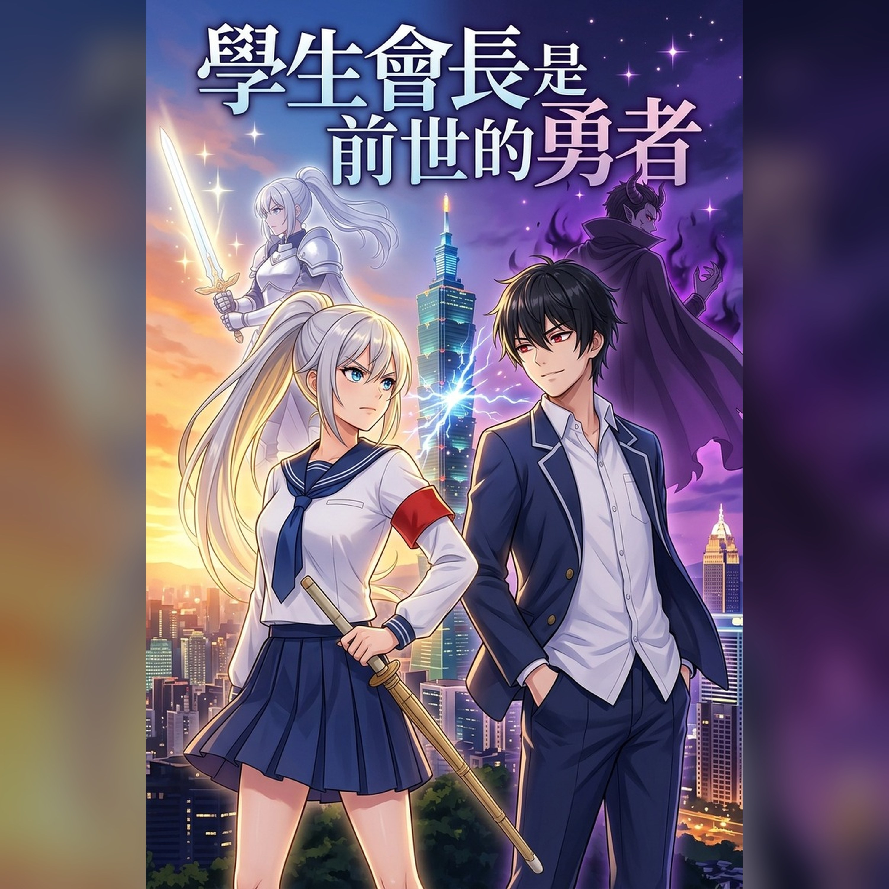

學生會長是前世的勇者｜有聲書
《學生會長是前世的勇者》有聲書。開學典禮上，我打瞌睡說了一句夢話——「蕾娜，別哭。」台上的學生會長，講稿從手上滑了下去。前世，她是斬殺魔王的勇者；今生，她是全校第一的學生會長，而我是她的雜務組。完美學生會長 × 嘴毒魔王雜務組，雙視角輪流登場的死對頭校園戀愛喜劇。
RSS：https://ntcloudy.github.io/brave-podcast/feed.xml
- 前世勇者｜第一章 蕾娜，別哭
- 前世勇者｜第二章 你也記得？
- 前世勇者｜第三章 以魔王之名
- 前世勇者｜第四章 魔王學弟與影印機
- 前世勇者｜第五章 最後一個菠蘿麵包
- 前世勇者｜第六章 五十九分與一把黑傘
- 前世勇者｜第七章 關燈之後
- 前世勇者｜第八章 星星形狀的餅乾
- 前世勇者｜第九章 白檀香
- 前世勇者｜第十章 左腳多踩的那一步
- 前世勇者｜第十一章 是一種手機遊戲
- 前世勇者｜第十二章 勇者只是被騙了
- 前世勇者｜第十三章 媽媽的便當盒
- 前世勇者｜第十四章 難吃
- 前世勇者｜第十五章 第三個人
- 前世勇者｜第十六章 聖陽紋
- 前世勇者｜第十七章 最安靜的分數
- 前世勇者｜第十八章 往前不變，往上被拉
- 前世勇者｜第十九章 一個難忘的夜晚
- 前世勇者｜第二十章 沒寫單位
- 前世勇者｜第二十一章 談判桌的同一邊
- 前世勇者｜第二十二章 少了一張的照片
- 前世勇者｜第二十三章 第三根柱子
- 前世勇者｜第二十四章 鹹的也要
- 前世勇者｜第二十五章 一句長，一句短
- 前世勇者｜第二十六章 靜電
- 前世勇者｜第二十七章 你毋免一直做大人
- 前世勇者｜第二十八章 六小時四十二分十五秒
- 前世勇者｜第二十九章 以王之血為鑰
- 前世勇者｜第三十章 同盟
- 前世勇者｜第三十一章 北方的風
- 前世勇者｜第三十二章 兩個菠蘿麵包
- 前世勇者｜第三十三章 陛下，您在吃醋
- 前世勇者｜第三十四章 握住的那一瞬間
- 前世勇者｜第三十五章 魔熱
- 前世勇者｜第三十六章 魔力實驗紀錄
- 前世勇者｜第三十七章 可以去你家嗎
- 前世勇者｜第三十八章 不是愛心形狀的
- 前世勇者｜第三十九章 那不是絕症
- 前世勇者｜第四十章 看台底下
- 前世勇者｜第四十一章 海綿
- 前世勇者｜第四十二章 最長的夜之前
- 前世勇者｜第四十三章 四分十二秒
- 前世勇者｜第四十四章 我是白晴
- 前世勇者｜第四十五章 那不算
- 前世勇者｜第四十六章 三條約定
- 前世勇者｜第四十七章 被撕掉的那一頁
- 前世勇者｜第四十八章 粉紅色的光
- 前世勇者｜第四十九章 四拍
- 前世勇者｜第五十章 同步呼吸
- 前世勇者｜第五十一章 嵐月烘焙坊的後巷
- 前世勇者｜第五十二章 四分之一茶匙
- 前世勇者｜第五十三章 剛好她來的時間
- 前世勇者｜第五十四章 第二攤
- 前世勇者｜第五十五章 王之血，安好？
- 前世勇者｜第五十六章 隔著兩層毛線
- 前世勇者｜第五十七章 百分之八十七
- 前世勇者｜第五十八章 十二顆骰子
- 前世勇者｜第五十九章 四分之一茶匙的面試
- 前世勇者｜第六十章 被風吹散的那句話